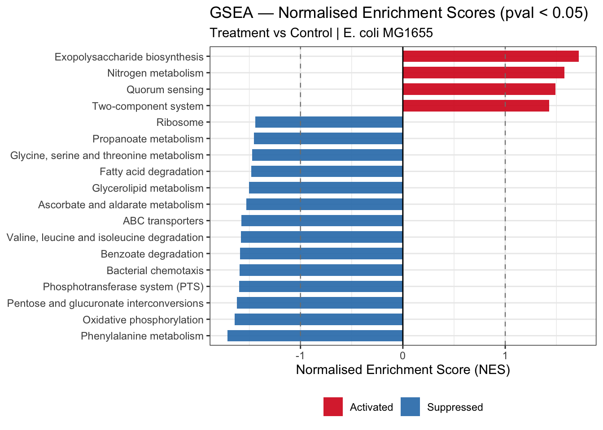
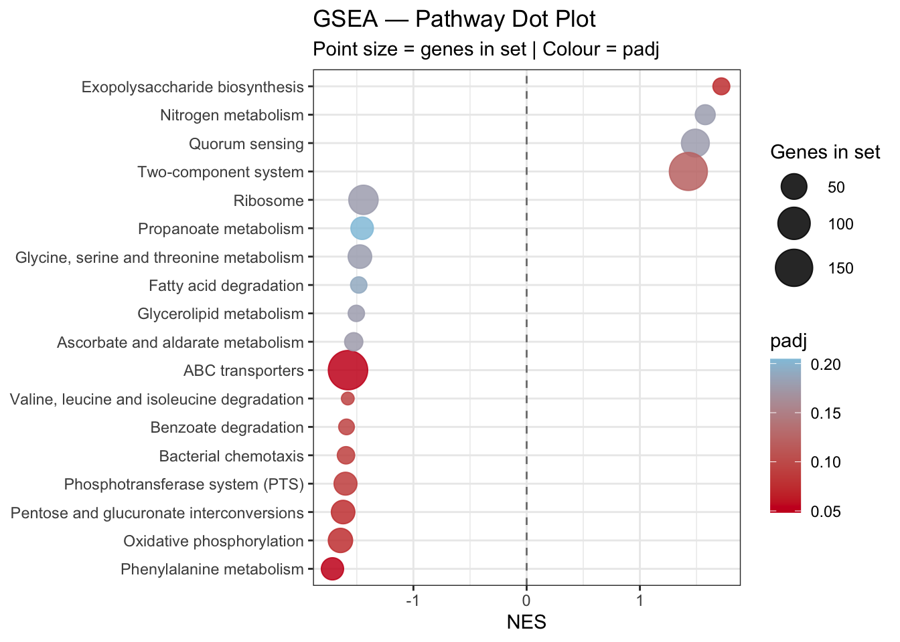
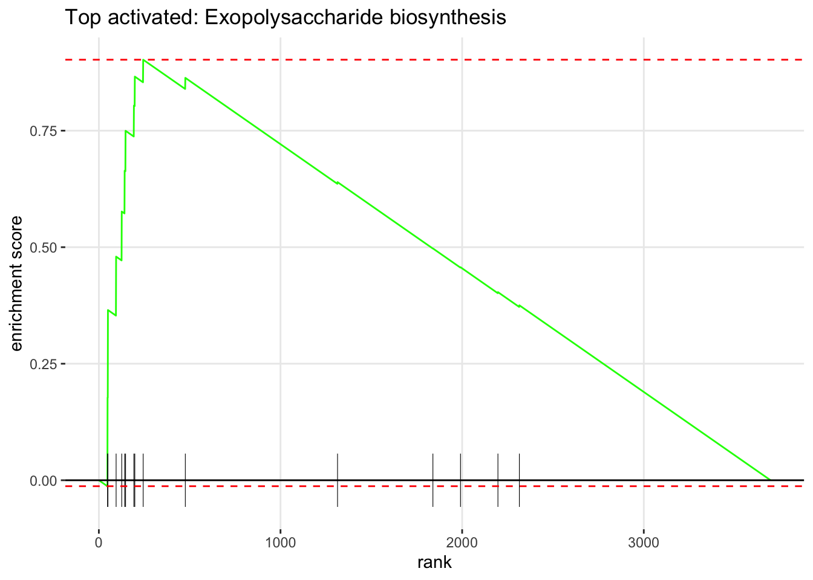
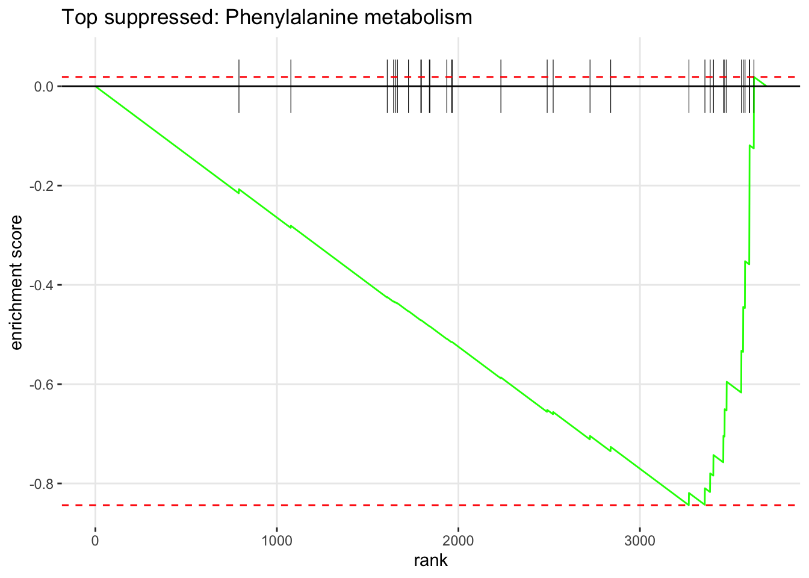

12.6 Visualise GSEA Results
12.6.1 NES Bar Plot — Activated and Suppressed Pathways
cols_direction <- c("Activated" = "#d7191c", "Suppressed" = "#2c7bb6")
# Use top 20 by |NES| if more than 20 significant, otherwise show all
gsea_bar <- gsea_results %>%
as.data.frame() %>%
filter(pval < 0.05) %>%
slice_max(abs(NES), n = 20) %>%
mutate(
direction = ifelse(NES > 0, "Activated", "Suppressed"),
pathway = fct_reorder(pathway, NES)
)
gsea_nesplot <- ggplot(gsea_bar,
aes(x = NES,
y = pathway,
fill = direction)) +
geom_col(width = 0.7, alpha = 0.9) +
geom_vline(xintercept = 0, color = "black", linewidth = 0.5) +
geom_vline(xintercept = c(-1, 1), linetype = "dashed",
color = "grey50", linewidth = 0.4) +
scale_fill_manual(values = cols_direction) +
theme_bw() +
theme(legend.position = "bottom") +
labs(
title = "GSEA — Normalised Enrichment Scores (pval < 0.05)",
subtitle = "Treatment vs Control | E. coli MG1655",
x = "Normalised Enrichment Score (NES)",
y = NULL,
fill = NULL
)
gsea_nesplot
12.6.2 Dot Plot — NES, padj and Gene Set Size
gsea_dotplot <- ggplot(gsea_bar,
aes(x = NES,
y = pathway,
size = size,
color = padj)) +
geom_point(alpha = 0.85) +
geom_vline(xintercept = 0, linetype = "dashed", color = "grey50") +
scale_color_gradient(low = "#CA0020", high = "#92C5DE", name = "padj") +
scale_size_continuous(name = "Genes in set", range = c(3, 10)) +
theme_bw() +
theme(legend.position = "right") +
labs(
title = "GSEA — Pathway Dot Plot",
subtitle = "Point size = genes in set | Colour = padj",
x = "NES",
y = NULL
)
gsea_dotplot
12.6.3 Enrichment Plot — Top Pathways
The enrichment plot shows the running sum of the enrichment score for a single pathway across the ranked gene list. The peak of the curve is the enrichment score. Genes from the pathway are shown as vertical bars (the “rug”) at the bottom.
# Top activated pathway
top_up <- gsea_results %>%
as.data.frame() %>%
filter(NES > 0) %>%
slice_min(pval, n = 1) %>%
pull(pathway)
# Top suppressed pathway
top_down <- gsea_results %>%
as.data.frame() %>%
filter(NES < 0) %>%
slice_min(pval, n = 1) %>%
pull(pathway)
if (length(top_up) > 0) {
plotEnrichment(pathways_list[[top_up]], rank_vector) +
labs(title = paste("Top activated:", top_up))
}
if (length(top_down) > 0) {
plotEnrichment(pathways_list[[top_down]], rank_vector) +
labs(title = paste("Top suppressed:", top_down))
}